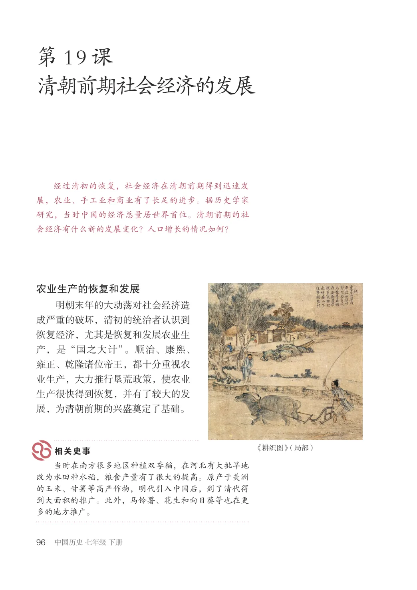
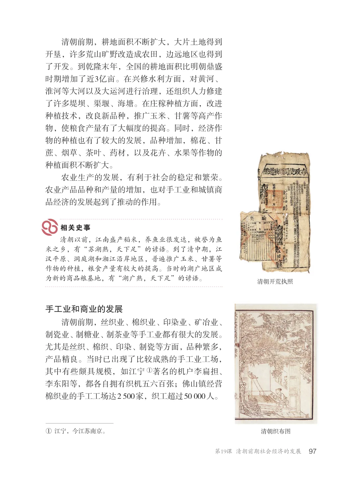
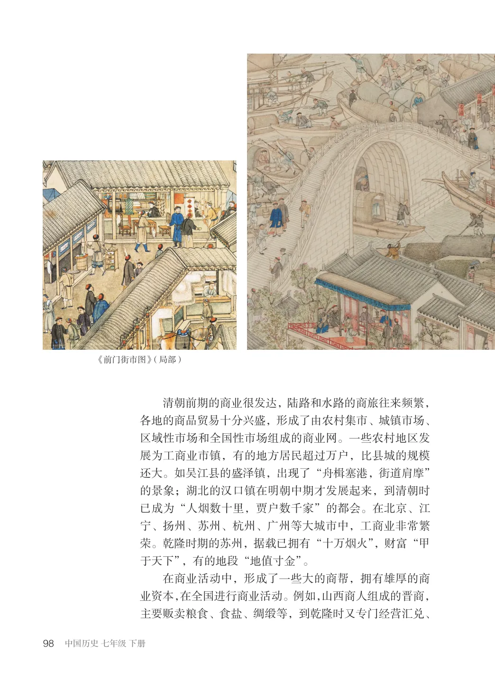
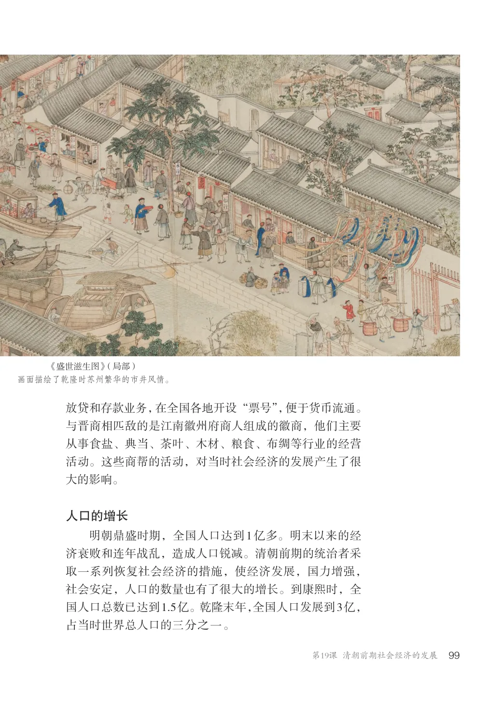
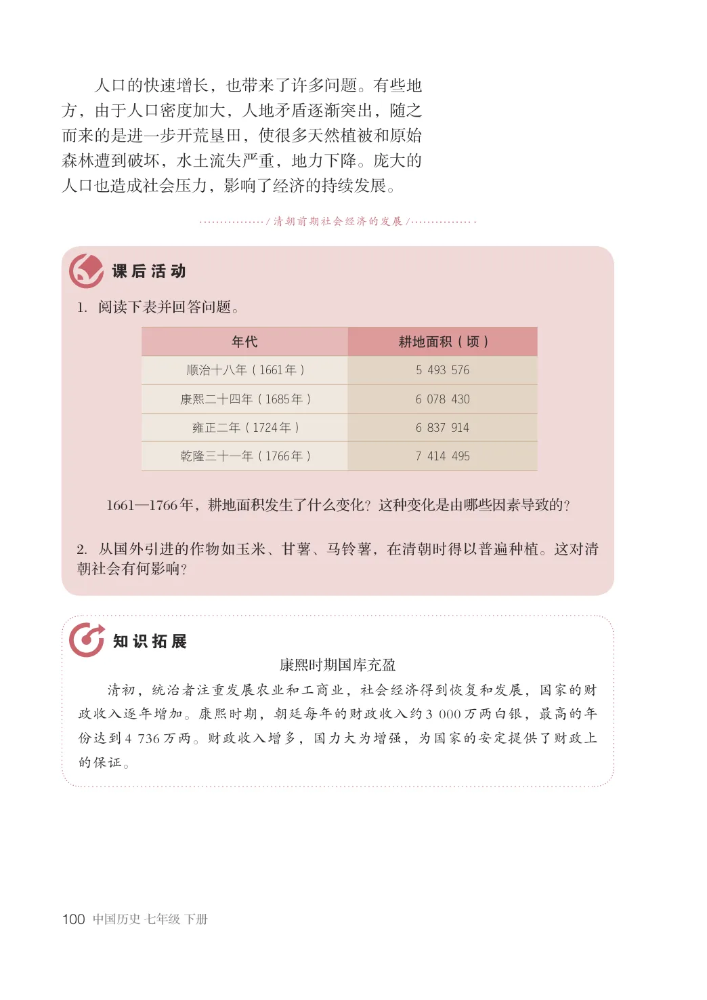

第3单元 · 教材第 96–100 页
第19课 清朝前期社会经济的发展
文字版依据教材 PDF 文本层整理；复杂地图、图表及版面关系请以右侧教材原页为准。
经过清初的恢复，社会经济在清朝前期得到迅速发展，农业、手工业和商业有了长足的进步。据历史学家研究，当时中国的经济总量居世界首位。清朝前期的社会经济有什么新的发展变化？人口增长的情况如何？
农业生产的恢复和发展
明朝末年的大动荡对社会经济造成严重的破坏，清初的统治者认识到恢复经济，尤其是恢复和发展农业生产，是“国之大计”。顺治、康熙、雍正、乾隆诸位帝王，都十分重视农业生产，大力推行垦荒政策，使农业生产很快得到恢复，并有了较大的发展，为清朝前期的兴盛奠定了基础。
《耕织图》（局部）
当时在南方很多地区种植双季稻，在河北有大批旱地改为水田种水稻，粮食产量有了很大的提高。原产于美洲的玉米、甘薯等高产作物，明代引入中国后，到了清代得到大面积的推广。此外，马铃薯、花生和向日葵等也在更多的地方推广。

清朝前期，耕地面积不断扩大，大片土地得到开垦，许多荒山旷野改造成农田，边远地区也得到了开发。到乾隆末年，全国的耕地面积比明朝鼎盛时期增加了近3亿亩。在兴修水利方面，对黄河、淮河等大河以及大运河进行治理，还组织人力修建了许多堤坝、渠堰、海塘。在庄稼种植方面，改进种植技术，改良新品种，推广玉米、甘薯等高产作物，使粮食产量有了大幅度的提高。同时，经济作物的种植也有了较大的发展，品种增加，棉花、甘蔗、烟草、茶叶、药材，以及花卉、水果等作物的种植面积不断扩大。农业生产的发展，有利于社会的稳定和繁荣。农业产品品种和产量的增加，也对手工业和城镇商品经济的发展起到了推动的作用。
清朝以前，江南盛产稻米，养鱼业很发达，被誉为鱼米之乡，有“苏湖熟，天下足”的谚语。到了清中期，江汉平原、洞庭湖和湘江沿岸地区，普遍推广玉米、甘薯等作物的种植，粮食产量有较大的提高。当时的湖广地区成为新的商品粮基地，有“湖广熟，天下足”的谚语。
清朝开荒执照
手工业和商业的发展
清朝前期，丝织业、棉织业、印染业、矿冶业、制瓷业、制糖业、制茶业等手工业都有很大的发展。尤其是丝织、棉织、印染、制瓷等方面，品种繁多，产品精良。当时已出现了比较成熟的手工业工场，其中有些颇具规模，如江宁①著名的机户李扁担、李东阳等，都各自拥有织机五六百张；佛山镇经营棉织业的手工工场达2500家，织工超过50000人。
①江宁，今江苏南京。清朝织布图

《前门街市图》（局部）
清朝前期的商业很发达，陆路和水路的商旅往来频繁，各地的商品贸易十分兴盛，形成了由农村集市、城镇市场、区域性市场和全国性市场组成的商业网。一些农村地区发展为工商业市镇，有的地方居民超过万户，比县城的规模还大。如吴江县的盛泽镇，出现了“舟楫塞港，街道肩摩”的景象；湖北的汉口镇在明朝中期才发展起来，到清朝时已成为“人烟数十里，贾户数千家”的都会。在北京、江宁、扬州、苏州、杭州、广州等大城市中，工商业非常繁荣。乾隆时期的苏州，据载已拥有“十万烟火”，财富“甲于天下”，有的地段“地值寸金”。在商业活动中，形成了一些大的商帮，拥有雄厚的商业资本，在全国进行商业活动。例如，山西商人组成的晋商，主要贩卖粮食、食盐、绸缎等，到乾隆时又专门经营汇兑、

《盛世滋生图》（局部）画面描绘了乾隆时苏州繁华的市井风情。
放贷和存款业务，在全国各地开设“票号”，便于货币流通。与晋商相匹敌的是江南徽州府商人组成的徽商，他们主要从事食盐、典当、茶叶、木材、粮食、布绸等行业的经营活动。这些商帮的活动，对当时社会经济的发展产生了很大的影响。
人口的增长
明朝鼎盛时期，全国人口达到1亿多。明末以来的经济衰败和连年战乱，造成人口锐减。清朝前期的统治者采取一系列恢复社会经济的措施，使经济发展，国力增强，社会安定，人口的数量也有了很大的增长。到康熙时，全国人口总数已达到1.5亿。乾隆末年，全国人口发展到3亿，占当时世界总人口的三分之一。

人口的快速增长，也带来了许多问题。有些地方，由于人口密度加大，人地矛盾逐渐突出，随之而来的是进一步开荒垦田，使很多天然植被和原始森林遭到破坏，水土流失严重，地力下降。庞大的人口也造成社会压力，影响了经济的持续发展。
/ 清朝前期社会经济的发展/
1．阅读下表并回答问题。
年代耕地面积（顷）
顺治十八年（1661年）5493576
康熙二十四年（1685年）6078430
雍正二年（1724年）6837914
乾隆三十一年（1766年）7414495
1661—1766年，耕地面积发生了什么变化？这种变化是由哪些因素导致的？
2．从国外引进的作物如玉米、甘薯、马铃薯，在清朝时得以普遍种植。这对清朝社会有何影响？
康熙时期国库充盈清初，统治者注重发展农业和工商业，社会经济得到恢复和发展，国家的财政收入逐年增加。康熙时期，朝廷每年的财政收入约3000万两白银，最高的年份达到4736万两。财政收入增多，国力大为增强，为国家的安定提供了财政上的保证。
